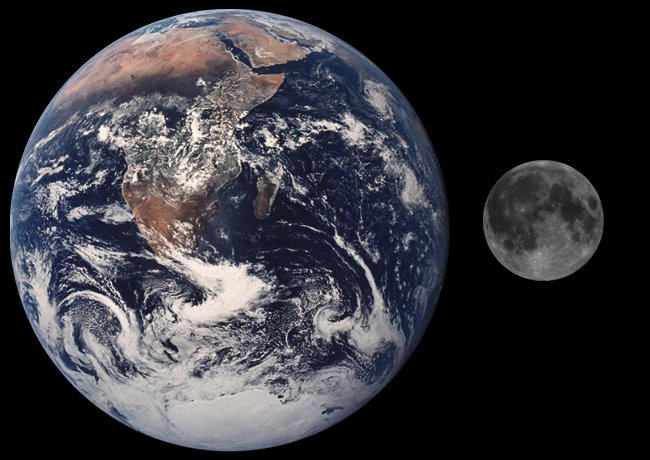
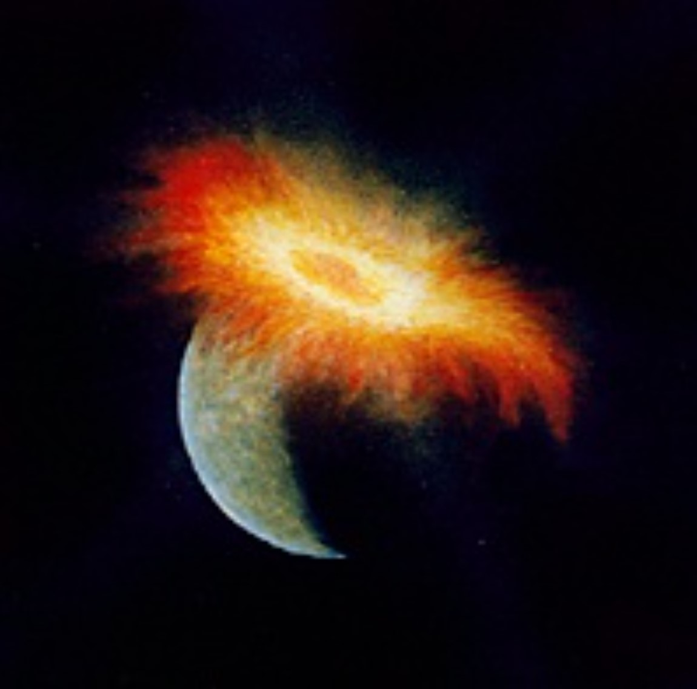

Earth’s Moon is an anomaly in our solar system. Our moon is the largest in the solar system in relation to the host planet and it has unusually low density due to an unusually small iron core. Because of these unique characteristics, the formation of the Moon is an important question to answer to understand our solar system’s history.
Previous hypotheses tried to form an answer for how the Moon formed to end up the way it is today. One common way moons form is in orbit around their planet. This explanation doesn’t make sense for the Moon though because the Moon has a very low iron content, which is a sign it had an unusual formation process. Moons also can be captured objects, but that doesn’t make sense for the Moon either because rocks on the Moon and Earth have the same isotope composition. A far-fetched hypothesis of the Moon’s formation involves the Earth spinning so fast that matter flew off and went into orbit, forming the Moon, but this doesn’t work out mathematically because it lacks sufficient energy and angular momentum. The Moon is such an unusual object that we have to think more creatively to come up with how we got our nearest neighbor.
We can look back at our solar system’s formation to figure out how the Moon formed. The early solar system was a very violent place, with many more small objects and many more collisions. In fact, planetesimals formed from numerous impacts of small objects that gained more and more mass until their gravity began to pull in objects from outside their orbital path. Not only were all these impacts were occurring to form planetesimals, some of these planetesimals collided and combined their mass to form planets. This gives us an important clue for how we got the Moon – from a collision.
Our current leading theory for the formation of the Moon is that the proto-Earth and a proto-planet the size of Mars called Theia collided 4.5 billion years ago. This was about 30-50 million years after the formation of the solar system, during the time period when planetesimals on unstable orbital paths were numerous and massive collisions were much more common. When Theia collided with Earth at an oblique angle, vaporizing much of itself and the Earth’s crust and mantle. A lot of this material was flung into space and orbited the Moon as a disk. This post-impact material in orbit over time coalesced to form the Moon.
This theory was published in 1975 by scientists Dr. William Hartmann and Dr. Donald Davis in the scientific journal Icarus. The two scientists went off of research from the Soviet Union in the 1960’s on aggregation of planetesimals into planets, which they realized could apply to material in orbit around Earth. When publicizing this research, they found that another scientist was working on the same problem with a different approach. Harvard scientists A. G. W. Cameron and William Ward were studying the angular momentum of the Moon and Earth in relation to a collision that formed the Moon, and they found that the object to hit Earth would have been a third to half the size of Earth. This theory over time was supported as well as challenged, and over time it became the strong leading hypothesis of the formation of the Moon.
This hypothesis is so highly regarded because it explains all the unusual characteristics of the Moon. Earth has a large iron core, as expected of a planet, but the Moon has a very small iron core relative to its size. This is a sign that the Moon did not form in a normal way from small collisions building up over time, but instead is mostly the outer material of two planets that collided, which explains why the Moon has such a small core and is mostly low-density rock. Additionally, the Moon and Earth have the exact same oxygen isotope in their rocks, which suggests that they formed together and makes sense that the two worlds mixed materials in the giant impact. Finally, this hypothesis justifies why the Moon is so large in comparison to Earth, and why all the other rocky planets don’t have large Moons like Earth has.
The Giant Impact Theory is the most widely accepted theory of how the Moon formed, but the theory is still challenged. Some scientists counter that the Moon’s composition is too similar to the Earth, and should be mostly the unique makeup of Theia. From the rock samples of the Moon, we see that the composition of the Moon is very similar too Earth. Some scientists defend the giant impact theory by arguing that Earth and Theia were similar compositions to start with, perhaps if they didn’t form too far from each other. Clearly, the giant impact theory is just that -- a theory – and not yet considered a proven and widely believed fact.